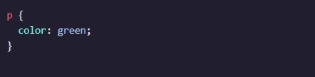

A selector is used to target the specific HTML element(s) to be styled by the declaration.
Just like its name suggests, the type selector matches the type of the element in the HTML document.
This is an instance of using the type selector! The element type is p, which comes from the HTML <p> element.
You learned how the type selector selects all elements of a given type. Well, the universal selector selects all elements of any type.
Targeting all of the elements on the page has a few specific use cases, such as resetting default browser styling, or selecting all children of a parent element.
The universal selector uses the * character in the same place where you specified the type selector in a ruleset, like so:

In the code above, every text element on the page will have its font changed to Verdana.
CSS is not limited to selecting elements by their type. As you know, HTML elements can also have attributes. When working with HTML and CSS a class attribute is one of the most common ways to select an element.
For example, when the class attribute is set to 'brand'. To select this element using CSS, we can create a ruleset with a class selector of .brand.
To select an HTML element by its class using CSS, a period (.) must be prepended to the class’s name.
It’s possible to add more than one class name to an HTML element’s class attribute. For instance, perhaps there’s a heading element that needs to be green and bold.
Then, you could include both of these classes on one HTML element like this:

We can add multiple classes to an HTML element’s class attribute by separating them with a space. This enables us to mix and match CSS classes to create many unique styles without writing a custom class for every style combination needed.
If an HTML element needs to be styled uniquely, we can give it an ID using the id attribute.
In contrast to class which accepts multiple values, and can be used broadly throughout an HTML document, an element’s id can only have a single value, and only be used once per page.
To select an element’s ID with CSS, we prepend the id name with a number sign (#)
The attribute selector can be used to target HTML elements that already contain attributes. Elements of the same type can be targeted differently by their attribute or attribute value.
The most basic syntax is an attribute surrounded by square brackets. In the above example: [href] would target all elements with an href attribute and set the color to magenta.
And it can get more granular from there by adding type and/or attribute values. One way is by using type[attribute*=value]. In short, this code selects an element where the attribute contains any instance of the specified value.

The HTML code above renders two <img> elements, each containing a src attribute with a value equaling a link to an image file.
The attribute selector is used to target each image individually.
Notice how no new HTML markup (like a class or id) needed to be added, and we were still able to modify the styles of each image independently. This is one advantage to using the attribute selector!
You may have observed how the appearance of certain elements can change, or be in a different state, after certain user interactions. For instance:
These are all examples of pseudo-class selectors in action! In fact, :focus, :visited, :disabled, and :active are all pseudo-classes.
Factors such as user interaction, site navigation, and position in the document tree can all give elements a different state with pseudo-class.
A pseudo-class can be attached to any selector. It is always written as a colon : followed by a name. For example p:hover.
In the above code, whenever the mouse hovers over a paragraph element, that paragraph will have a lime-colored background.
| CSS Selector | Explanation | Example |
|---|---|---|
| Type | to target the type of the element in the HTML | p {} |
| Universal | to taget all the elements | * {} |
| Class | to style many HTML elements in a group | .classname {} |
| ID | to style an HTML element uniquely | #IDname {} |
| Attribute | to target elements of the same type differently by their attribute | [href] {} |
| Pseudo-Class | to change the appearance of certain elements by user interaction | input:focus {} |